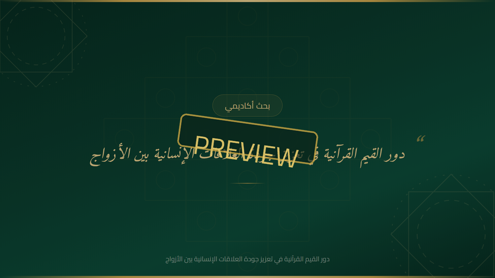
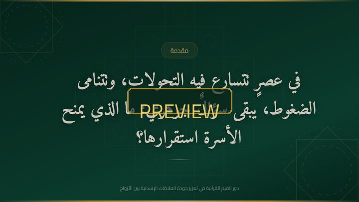
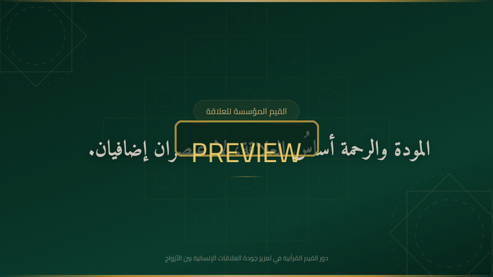
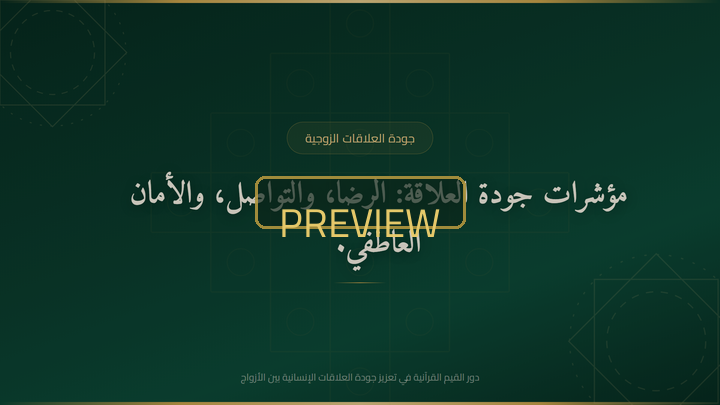
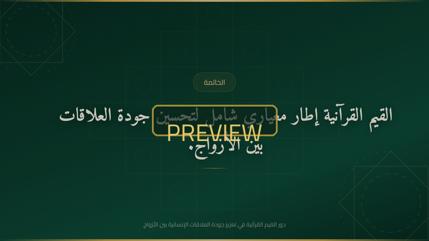

Watermarked preview shown for confidentiality. The full-resolution videos are released to the client only after approval.
Open the research presentation
Arabic RTL slide deck (12 slides) summarising the research — concept, founding values, conflict management, quality indicators, Arab context and critical reading.
Open the presentation ↗The brief
- ✓Study the role of Quranic values in strengthening marital relationship quality.
- ✓Reference-based analysis (Literature Review + Critical Review) with real academic sources.
- ✓Write a full 29-scene script with precise timing per scene.
- ✓Produce calm, modern narration in classical Arabic and in Egyptian dialect.
- ✓Deliver in horizontal and vertical formats for all platforms.
What I delivered
- ✓Research report + source document with an analytical six-axis structure.
- ✓Detailed 29-scene script (scene id, on-screen text, duration, priority).
- ✓High-quality AI narration — Fusha (8:42) and Egyptian (6:50), ~29 files each.
- ✓58 designed frames (1920×1080 + 1080×1920) in an emerald & gold identity.
- ✓5 finished videos: horizontal, vertical, + motion version (Ken Burns & crossfades).
- ✓Interactive 12-slide presentation summarising the research.
The research
The study examines how Quranic values act as practical mechanisms — not abstract ideals — that regulate daily interaction between spouses. The Quranic vision frames marriage as far more than a social contract: a value system grounded in mawaddah (affection), rahmah (compassion), sakan (tranquility) and 'adl (justice).
The critical review contrasts this normative frame with modern marital-quality indicators (satisfaction, cohesion, communication, conflict management), then reads the Arab context: family structure still holds a central place, many conflicts stem from weak communication rather than absence of love — and Quranic values offer a preventive and corrective entry point for family counselling.
Mawaddah, rahmah, sakan, 'adl — the emotional and normative foundation of the marital bond (Quran 30:21).
Dialogue, reform, reconciliation and graded problem-solving — values that make conflict manageable, not absent.
Quality indicators tied to value-commitment, applied to the Arab family and its modern challenges.
Presentation slides
12 slides — click any slide to open the full deck.
Video & still frames
Sample stills from the video — emerald & gold identity, Amiri & Cairo type, calm pacing.

Opening hook
Mawaddah & rahmah
Quality indicators
ConclusionDesign & motion
- ✓Emerald gradient + gold ornaments and eight-pointed star motifs.
- ✓Amiri for Arabic text and Cairo for headings — elegant, readable.
- ✓Motion version: Ken Burns camera moves + crossfade transitions on the intro.
- ✓Calm pacing synced precisely to the narration (scale-calibrated timings).
Stack
- ✓Narration — edge-tts (Arabic voices) + ElevenLabs for key scenes.
- ✓Frames — HTML/CSS + SVG ornaments, rendered via headless Chromium.
- ✓Assembly — MoviePy (FFmpeg), H.264, AAC, 30 fps.
- ✓Formats — 1920×1080 horizontal, 1080×1920 vertical, motion variant.
Want research-based video content for your topic?
Send your topic — you get a clear plan, professional proposal and a finished video series you can publish.